Vulnerability Scanning — Nmap Advanced Scanning & Nessus (40 Minutes)¶
Lab Type: Vulnerability Scanning
Tool: Nmap, Nessus
Duration: 40 Minutes
System: Kali Linux (attacker), Metasploitable2 (target)
Lab Overview¶
You have recently joined the Security Operations Center (SOC) team of a startup organization. Part of your job is running periodic vulnerability assessments against internal hosts before attackers find the same weaknesses first.
In this lab, you will perform a deep network/service scan with Nmap, then run an authenticated vulnerability scan with Nessus against the same host, and compare what each tool actually confirms as exploitable.
Learning Objectives¶
By the end of this lab you will be able to:
- Perform advanced Nmap scans (full port range, service/version detection, OS fingerprinting)
- Use Nmap's NSE vulnerability scripts to confirm exploitable findings
- Install, license, and run an authenticated Nessus scan
- Compare automated scanner output against each other rather than trusting either blindly
- Identify which external hosts are legitimately safe to point a scanner at
Scenario¶
Your target is a Metasploitable2 VM — an intentionally vulnerable Linux box used industry-wide for exactly this kind of practice. You will scan it from a Kali attacker VM on an isolated host-only network, so nothing you do here can reach a real production system by accident.
Environment Setup¶
Objective¶
Get both VMs talking to each other on an isolated network before scanning anything.
Steps¶
- In VMware, set both the Kali VM and the Metasploitable2 VM's Network Adapter to the same Host-only network. Never Bridged, and never mixed modes between the two VMs.
Warning
If one VM is set to Host-only and the other to NAT, they sit on different subnets and can't reach each other — you'll get Network is unreachable even though both VMs are running fine. Check VM → Settings → Network Adapter on both and make sure the radio button selection matches exactly.
- Boot both VMs and note their IPs:
ip a
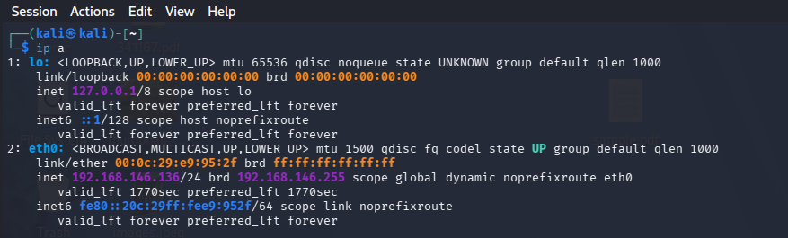
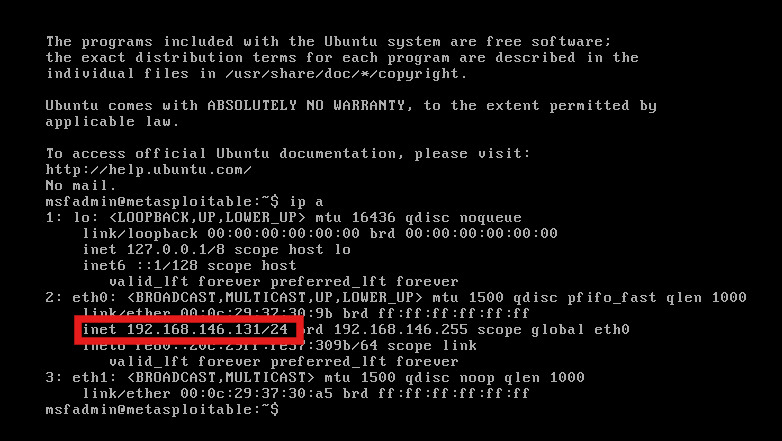
- Confirm they can see each other from Kali:
ping -c 3 <target-ip>
Warning
A VM rebuild (reinstalling Kali, for example) can land you on a different default Host-only subnet than before. Always re-run ip a on both VMs after any rebuild and use whatever IP you actually get — don't reuse an old IP from a previous session.
Host Discovery and Full Port Scanning¶
Objective¶
Confirm the target is alive, then enumerate every open port, service, and version on it.
Steps¶
- Sweep the subnet to confirm which hosts are up:
nmap -sn <your-subnet>/24
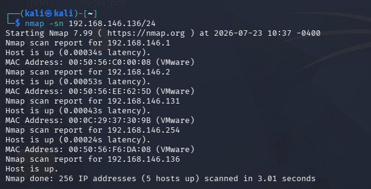
- Run the full scan against the confirmed target IP:
sudo nmap -sV -sC -O -p- -T4 <target-ip>
Warning
Running this without sudo produces repeated Operation not permitted errors and the scan won't complete — -O and raw packet crafting need root. Prefix every Nmap command in this lab with sudo so you don't lose a 15-minute scan halfway through.
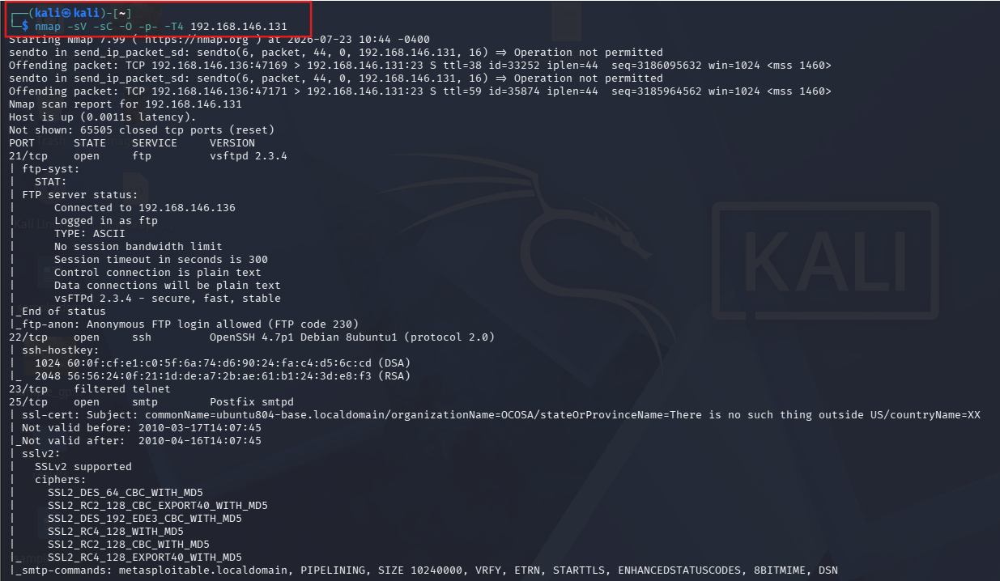
On this run, Metasploitable2 came back with a long list of intentionally vulnerable services, including vsftpd 2.3.4 (port 21), Samba 3.0.20-Debian (139/445), distccd (3632), and UnrealIRCd (6667/6697) — all classic Metasploitable2 findings.
- Two useful permutations depending on the situation:
sudo nmap -sS -p- -T4 <target-ip> — SYN/"stealth" scan, faster and quieter since it never completes the TCP handshake.
sudo nmap -Pn -sV -sU --top-ports 20 <target-ip> — skips host-discovery ping and scans UDP instead of TCP, useful for hosts that drop ICMP or for services like DNS/SNMP that TCP scans miss.
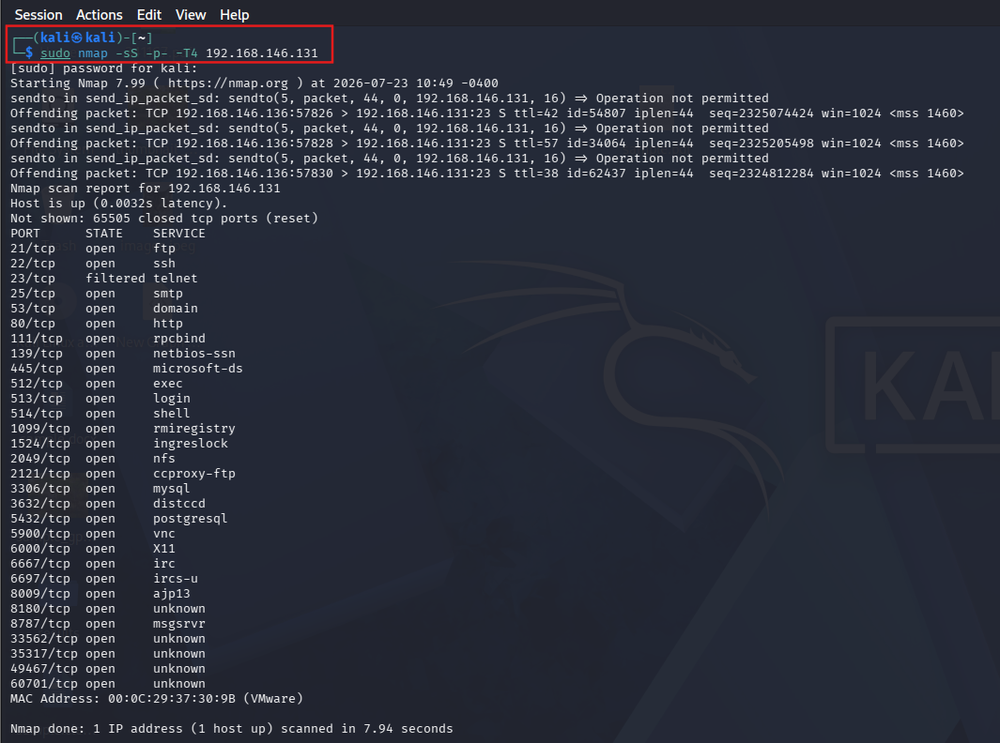
Discussion Questions¶
Why does -p- take so much longer than a default scan?
The default scan only checks the top 1000 most common ports. -p- checks all 65,535, so it has 65x more ports to probe — the tradeoff is completeness versus time.
Why does -O require root privileges?
OS fingerprinting relies on crafting and reading raw IP/TCP packets to analyze how the target's network stack responds to unusual probes. Raw socket access is restricted to root on Linux.
Nmap Vulnerability Scripts¶
Objective¶
Move from "what's open" to "what's actually exploitable" using Nmap's NSE vuln script category.
Steps¶
-
Run the vuln script set and save the output to a file, since it can be hundreds of lines long:
sudo nmap --script vuln <target-ip> -oN vuln_scan.txt -
Instead of scrolling, search the saved file directly for the findings you care about:
grep -n "vsftpd-backdoor\|unrealircd-backdoor\|rmi-vuln-classloader" vuln_scan.txt
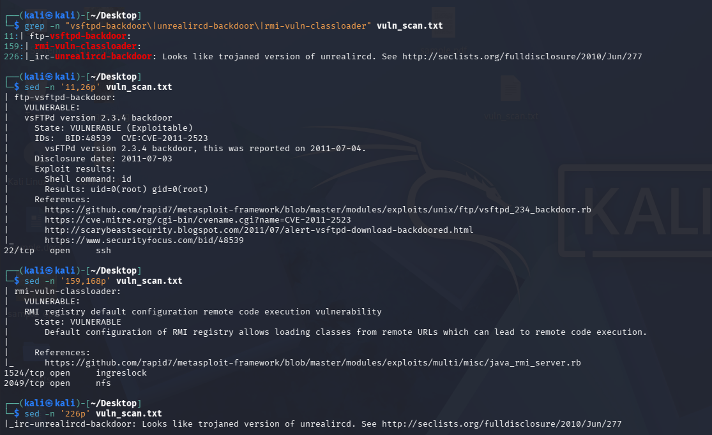
- On this run, Nmap confirmed four exploitable findings:
| Finding | Port | Evidence |
|---|---|---|
| vsFTPd 2.3.4 backdoor | 21 | Nmap ran id through the backdoor and got uid=0(root) back |
| UnrealIRCd trojaned backdoor | 6667 | Flagged as a known trojaned build |
| RMI registry classloader RCE | 1099 | Default config allows loading classes from remote URLs |
| SSL POODLE / Logjam | 25, 5432 | Weak SSLv3/export-grade cipher support |
Discussion Questions¶
Why does the vsftpd finding matter more than a simple open-port listing?
Nmap didn't just detect the version — the ftp-vsftpd-backdoor script actually exploited the backdoor and returned command output (id), proving remote code execution rather than just guessing from a version banner.
Why save scan output to a file instead of reading it live?
Vuln scans against a target this loaded with services can produce hundreds of lines. Saving to a file lets you grep for specific findings instead of scrolling, and gives you a permanent record for your report.
Nessus Setup and Authenticated Scanning¶
Objective¶
Install and license Nessus, then run an authenticated scan against the same target for comparison against Nmap.
Steps¶
- Register for a free Nessus Essentials activation code and download the Debian build from
tenable.com/downloads/nessus.
Warning
Nessus is not pre-installed on Kali and is not open-source — unlike Nmap, Metasploit, or Burp Community, it's Tenable's commercial product (free tier capped at 16 IPs, license required). This is a deliberate one-off exception for this specific lab.
- Confirm the actual downloaded filename before installing:
ls ~/Downloads
Warning
Nessus-<version>-debian10_amd64.deb is a placeholder pattern, not a literal filename — running it as typed fails with command not found. Use the exact filename ls shows you.
- Install and start the service:
sudo dpkg -i Nessus-<actual-filename>.deb
sudo systemctl start nessusd
sudo systemctl enable nessusd
Warning
If another apt/dpkg process is still running in the background, this fails with dpkg frontend lock was locked. Don't force-remove the lock file — check ps aux | grep apt, wait for it to finish or kill the stuck process, then run sudo dpkg --configure -a before retrying.
- Open
https://localhost:8834, choose Nessus Essentials, paste your activation code, and create an admin user.
Warning
Plugin downloads need internet access. If your VM is on Host-only (as set up above for scope compliance), the download fails with Download Failed. Temporarily switch the adapter to NAT, confirm connectivity (ping -c 3 8.8.8.8), let plugins finish downloading, then switch back to Host-only before scanning the target.
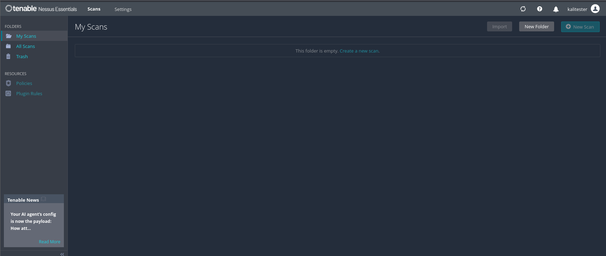
- Back on Host-only, re-confirm the target is reachable, then create the scan: New Scan → Basic Network Scan, target =
<target-ip>, Save, Launch.
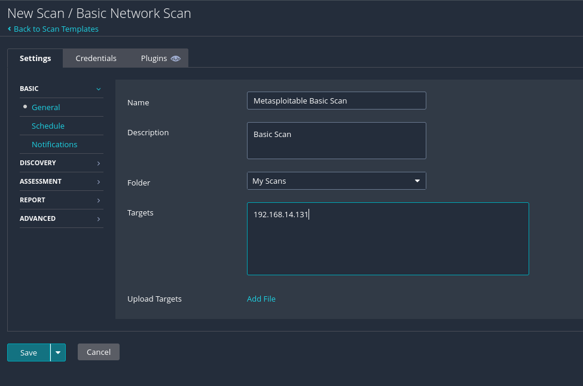
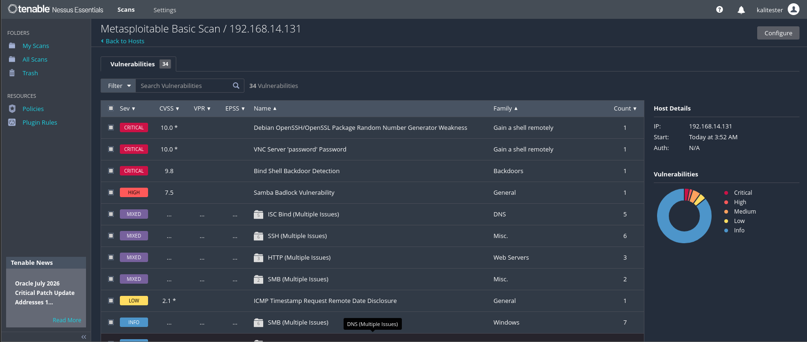
- Review results sorted by severity, or search directly for a known term (e.g.
backdoor) instead of scrolling a mixed list.
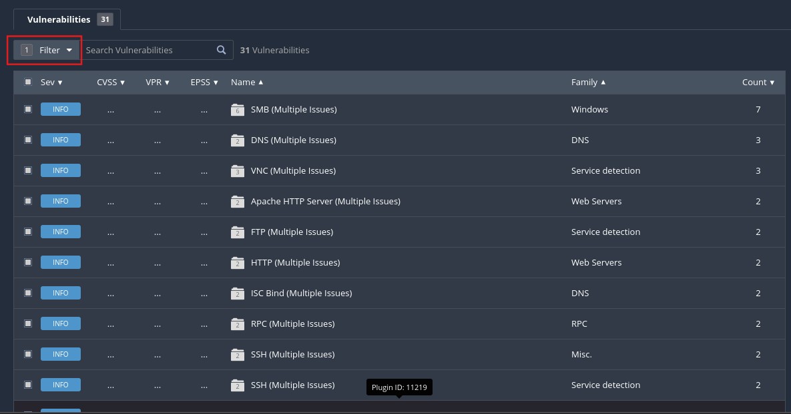
On this run, Nessus found 31 vulnerabilities total, with one confirmed Critical: a Bind Shell Backdoor Detection on port 1524 — Nessus ran id through the same unauthenticated shell Nmap had listed as "Metasploitable root shell" and got uid=0(root) back.
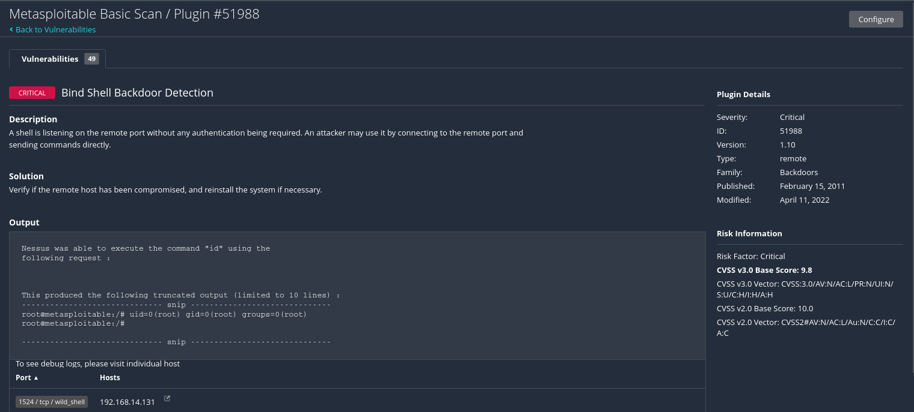
Discussion Questions¶
Why is Nessus treated as an exception to using open-source, Kali-native tools?
Nessus fills a different role than the rest of the toolkit — authenticated, policy-driven vulnerability scanning with a maintained plugin feed — that the open-source alternatives on Kali don't fully replicate. It's included deliberately for this lab despite being commercial software.
Why would a Basic Network Scan miss findings that Nmap's vuln scripts caught?
Nessus's default policy is tuned for broad, low-noise coverage across many hosts rather than aggressively confirming every possible exploit. Nmap's vuln scripts are narrow, purpose-built checks for specific known issues, so they can catch things a general-purpose default policy passes over.
Cross-Referencing Nmap and Nessus¶
Objective¶
Compare both tools' results on the same four tracked findings to understand each scanner's strengths.
| Finding | Nmap --script vuln |
Nessus (Basic Network Scan) |
|---|---|---|
| vsftpd 2.3.4 backdoor (21) | Confirmed exploitable, root shell | Passive version detection only |
| Root bind shell (1524) | Listed as open service | Confirmed exploitable, root shell (Critical) |
| UnrealIRCd backdoor (6667) | Confirmed | Not detected |
| RMI classloader RCE (1099) | Confirmed exploitable | Passive detection only |
Nmap's targeted NSE scripts confirmed all four findings as actively exploitable, while Nessus's default policy only actively verified one of the four. This isn't a Nessus shortcoming so much as a policy-design tradeoff — in a real assessment, you'd want both tools, or a more aggressive Nessus scan policy, rather than relying on either one alone.
Discussion Questions¶
If Nmap outperformed Nessus here, why use Nessus at all?
Nessus adds authenticated scanning, CVSS scoring, a maintained plugin feed, and compliance-oriented reporting that raw Nmap output doesn't provide on its own. The two tools complement each other rather than compete.
External / Authorized Website Scanning¶
Objective¶
Practice scanning a real, internet-facing host — but only ones that explicitly permit it.
Steps¶
- Run a light scan against Nmap's own sanctioned test host:
nmap -sV -sC scanme.nmap.org
Warning
The Nmap project permits scanning scanme.nmap.org, but asks users to keep it light — no more than about a dozen scans a day, and avoid -p- or --script vuln against it.
- A second legitimately open target, useful for outbound-port testing rather than vuln scanning:
portquiz.net, which listens on every TCP port by design — e.g.nmap portquiz.net -p1-1000.
Warning
Outside of hosts that explicitly publish permission like these two, absence of a "keep out" notice does not mean a site is authorized to scan. Never point a scanner at a real company's site or anything you don't own without written permission.
Discussion Questions¶
Why is scanme.nmap.org a rare exception to normal scanning rules?
Its operators explicitly and publicly consented to being scanned for testing purposes, which is the one thing that makes unsolicited scanning legal — authorization from the target's owner.
Learning Outcomes¶
Having completed this lab, you have:
- Run a full-port, service/version, and OS-fingerprinting Nmap scan against a live target
- Used Nmap's NSE vulnerability scripts to confirm, not just guess at, exploitable findings
- Installed, licensed, and configured an authenticated Nessus scan
- Cross-referenced two different scanners' results and understood why they diverged
- Identified which external hosts can legitimately be scanned without authorization concerns